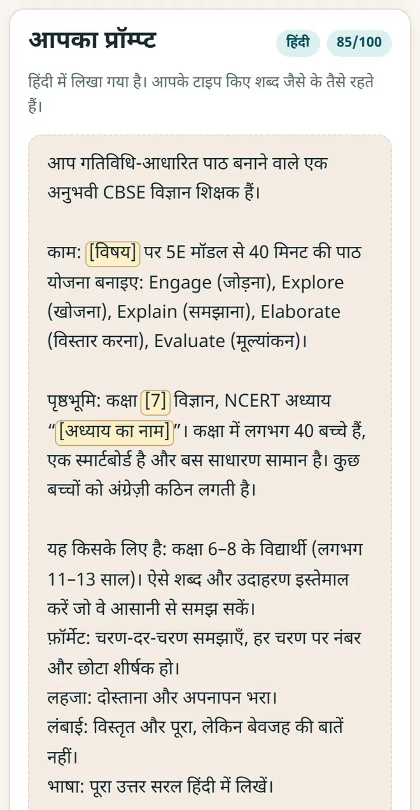
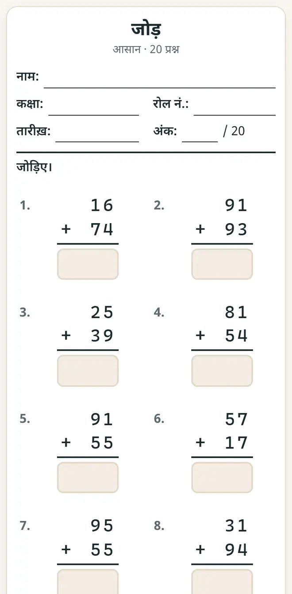

शिक्षकों के लिए मुफ़्त AI टूल: हर हफ़्ते घंटों की बचत
Gemini या ChatGPT से लेसन प्लान, प्रिंट करने लायक वर्कशीट, कक्षा की क्विज़, रिपोर्ट कार्ड और सर्टिफ़िकेट: हर काम मुफ़्त में, अपनी भाषा में और विद्यार्थियों का डेटा दिए बिना कैसे करें, यहाँ देखिए।
छोटा जवाब
किसी भी मुफ़्त AI चैटबॉट से अच्छा लेसन प्लान और प्रश्न-पत्र पाने के लिए प्रॉम्प्ट बिल्डर, उत्तर-कुंजी वाली वर्कशीट के लिए गणित वर्कशीट जनरेटर, कक्षा की क्विज़ और WhatsApp प्रैक्टिस लिंक के लिए क्विज़ मेकर और प्लेयर, और रिज़ल्ट के लिए अंक और रिपोर्ट कार्ड इस्तेमाल करें। सब मुफ़्त हैं, लॉगिन नहीं माँगते और डेटा आपके डिवाइस पर ही रखते हैं।
मुफ़्त टूल्स के साथ शिक्षक का एक हफ़्ता, स्टेप-बाय-स्टेप
-
अच्छे AI प्रॉम्प्ट से पाठ की योजना बनाएँ
प्रॉम्प्ट बिल्डर खोलें, लेसन प्लान या प्रश्न-पत्र जैसा कोई टेम्पलेट चुनें, कक्षा, विषय और अध्याय भरें और “प्रॉम्प्ट कॉपी करें” दबाएँ। यह प्रॉम्प्ट Gemini या ChatGPT में पेस्ट करें। एक लाइन के सवाल से कहीं बेहतर जवाब पूरे प्रॉम्प्ट से मिलता है।

प्रॉम्प्ट बिल्डर: टेम्पलेट चुनें, फिर कक्षा, विषय और अध्याय भरें। -
उत्तर-कुंजी के साथ गणित की वर्कशीट प्रिंट करें
गणित वर्कशीट जनरेटर में कक्षा 1–8 के 19 टॉपिक में से एक चुनें, सवालों की संख्या और कठिनाई तय करें। “प्रिंट करें” दबाएँ: उत्तर-कुंजी आख़िरी अलग पेज पर आती है, ताकि वह आपके पास रहे।

गणित वर्कशीट जनरेटर: उत्तर-कुंजी के साथ प्रिंट करने लायक वर्कशीट। -
कक्षा या होमवर्क के लिए क्विज़ बनाएँ
क्विज़ मेकर और प्लेयर में सवाल टाइप करें या Excel से CSV फ़ाइल के रूप में इम्पोर्ट करें। प्रोजेक्टर पर टीमों के स्कोर के साथ क्विज़ खेलें, या कक्षा के WhatsApp ग्रुप में प्रैक्टिस लिंक भेजें। पूरी क्विज़ लिंक के अंदर ही होती है, इसलिए विद्यार्थियों को लॉगिन नहीं करना पड़ता।
-
अंक भरें और रिपोर्ट कार्ड प्रिंट करें
अंक और रिपोर्ट कार्ड टोटल, CBSE जैसे ग्रेड और रैंक निकालता है, पूरी कक्षा का विश्लेषण दिखाता है और हर विद्यार्थी का रिपोर्ट कार्ड प्रिंट करता है। अंक आपके कंप्यूटर पर ही रहते हैं।
-
सर्टिफ़िकेट से हौसला बढ़ाएँ
प्रमाण पत्र मेकर पूरी कक्षा के मेरिट और भागीदारी सर्टिफ़िकेट एक साथ, 12 में से किसी भी भाषा में प्रिंट करता है। हाज़िरी रजिस्टर महीने की हाज़िरी रखता है और 75% से कम वालों को अलग दिखाता है।
-
AI के जवाब इस्तेमाल से पहले जाँचें
AI चैटबॉट तथ्यों, गणित और उत्तर-कुंजी में ग़लती करते हैं। हर जवाब पढ़ें, NCERT की किताब से मिलाएँ, और विद्यार्थियों के नाम, अंक या फ़ोन नंबर कभी किसी AI चैटबॉट में न डालें।
शिक्षकों के लिए तैयार प्रॉम्प्ट
- लेसन प्लान: “आप कक्षा 7 के अनुभवी विज्ञान शिक्षक हैं। [अध्याय] पर 40 मिनट का लेसन प्लान बनाइए, जिसमें शुरुआती गतिविधि, चर्चा के दो सवाल और होमवर्क हो। भारतीय उदाहरण दीजिए।”
- प्रश्न-पत्र: “कक्षा [n] के लिए [अध्याय] पर CBSE पैटर्न में 10 बहुविकल्पी और 5 लघु-उत्तरीय प्रश्न बनाइए, और उत्तर-कुंजी अलग पेज पर दीजिए।”
- नोट्स: “कक्षा [n] के लिए [टॉपिक] को आसान हिंदी में 10 पॉइंट में समझाइए, एक रोज़मर्रा के उदाहरण के साथ।”
- अभिभावकों को संदेश: “[तारीख़] की पैरेंट-टीचर मीटिंग के बारे में अभिभावकों के लिए हिंदी और अंग्रेज़ी में 60 शब्दों से कम का विनम्र WhatsApp संदेश लिखिए।”
नए मुफ़्त टूल और हिंदी में AI के पाठ पाएँ
हमारी ईमेल लिस्ट से जुड़ें: नए मुफ़्त ऐप, नई गाइड और AI पर हिंदी वीडियो पाठ की जानकारी आपको मिलती रहेगी। कोई स्पैम नहीं।
सिर्फ़ वयस्कों (18+) के लिए। आप कभी भी नाम हटवा सकते हैं।
हम ये टूल क्यों सुझाते हैं
- सबके लिए मुफ़्त: न विज्ञापन, न साइन-अप, न कोई पेड प्लान।
- प्राइवेट: आपकी फ़ाइलें और जानकारी आपके अपने डिवाइस पर ही रहती हैं।
- फ़ोन, लैपटॉप या स्मार्टबोर्ड पर चलते हैं, और एक बार खुलने के बाद बिना इंटरनेट भी।
- हिंदी समेत 12 भाषाओं में।
वीडियो से सीखना पसंद है? हमारे YouTube चैनल पर AI और मुफ़्त टूल्स के हिंदी पाठ देखें।
अक्सर पूछे जाने वाले सवाल
क्या शिक्षकों के लिए ये AI टूल सच में मुफ़्त हैं?
हाँ। AI की पाठशाला के ऐप मुफ़्त हैं: न विज्ञापन, न विद्यार्थियों के लिए लॉगिन, न कोई पेड प्लान। Gemini और ChatGPT के मुफ़्त वर्ज़न भी लेसन प्लान और प्रश्न-पत्र के लिए काफ़ी हैं।
क्या कुछ इंस्टॉल करना पड़ेगा?
नहीं। ऐप फ़ोन, लैपटॉप या स्मार्टबोर्ड के किसी भी ब्राउज़र में खुलते हैं। एक बार खोलने के बाद ऐप बिना इंटरनेट भी चलता रहता है।
क्या विद्यार्थियों के डेटा के साथ इस्तेमाल करना सुरक्षित है?
हमारे ऐप सब कुछ आपके डिवाइस पर ही रखते हैं: अंक, नाम और हाज़िरी कभी अपलोड नहीं होते। विद्यार्थियों के नाम, अंक या फ़ोन नंबर किसी भी AI चैटबॉट में पेस्ट न करें।
हिंदी के लिए कौन-सा AI चैटबॉट सबसे अच्छा है?
Gemini और ChatGPT दोनों हिंदी और दूसरी भारतीय भाषाएँ समझते हैं। जिस भाषा में जवाब चाहिए, उसी में प्रॉम्प्ट लिखें, और कक्षा व बोर्ड (CBSE या राज्य बोर्ड) ज़रूर बताएँ।
क्या AI पूरा प्रश्न-पत्र बना सकता है?
यह अच्छा पहला ड्राफ़्ट बना देता है। प्रिंट से पहले सवाल, अंक और उत्तर-कुंजी ख़ुद जाँचें, क्योंकि AI कभी-कभी ग़लत जवाब देता है।
काम की लगी?
इसे किसी दोस्त, साथियों या अपने स्कूल के WhatsApp ग्रुप में भेजें।